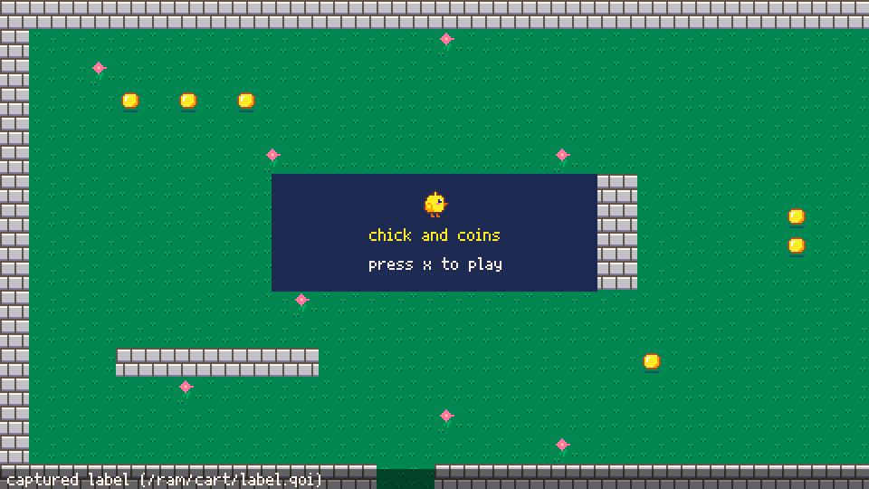
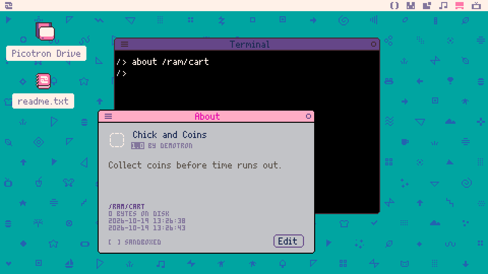
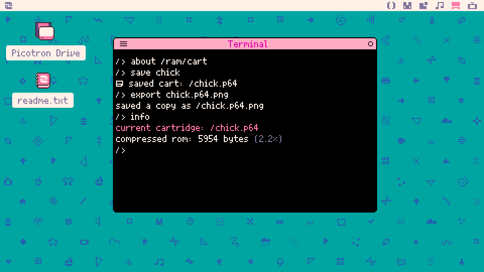
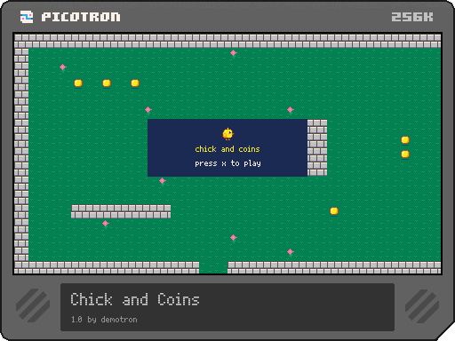

demotron / beginner basics / 12
Your first game
A complete little game from Basics 1 to 11: game states, playing against the clock, starting again, polish, and sharing it on the BBS.
The plan
We've got a chick that walks, a level with walls and coins, and sounds for jumping, coins and bumps. In this lesson they become a game, Chick and Coins: the chick has 30 seconds to collect as many coins as it can. There's a title screen, a game-over screen with the score and the best score so far, and a press of X starts another round. At the end we save it as a cartridge anyone can play and put it on the Lexaloffle BBS.
I've kept it small on purpose: one level, no enemies, nothing that can hurt the chick. A small game that's finished teaches more than a big one that isn't, and the parts we leave out are where the "Try this" ideas come from.
Almost all the code already exists, spread across earlier lessons. What's new is the shape around it: how a game moves between its title, playing and game-over screens, and how it starts a second round cleanly. That second part is where most first games go wrong.
Setting up
The game needs the art from Basics 9 and 10 and the sounds from Basics 11, in one cartridge:
- sprite 1 the chick, 2 and 3 its walking frames, 8 grass, 9 a wall with flag 0 set (solid), 10 a coin and 11 a flower
- the level from Basics 10, 64 by 24 tiles, with coins painted on it
- sfx 0 the jump, 1 the coin, 2 the bump, and the music in patterns 0 and 1
To Picotron's file commands a cartridge is a folder (Basics 1 showed the working one, /ram/cart; a saved .p64 is one too), so cp can copy files out of one cartridge and into another. Say your Basics 10 cartridge is maps.p64 and your Basics 11 one is sound.p64. In the terminal:
cp maps.p64 chick.p64
cp sound.p64/sfx/0.sfx chick.p64/sfx/0.sfx
load chickThe first line makes a copy of the Basics 10 cartridge to work in, the second puts the sounds in the copy, and load makes it the working cartridge. I do the copying before load rather than after it: an open editor keeps its own copy of its file and writes it back when the cartridge is saved, so a file copied into /ram/cart under an open sfx editor gets overwritten.
The demos below use our chick, tiles and sounds; yours work the same if they're in the same slots.
Game states
A game spends its time in a few different situations: showing the title, playing, showing the score. Each one has different rules (X starts the game on the title, but does nothing while playing) and draws something different. We keep track of which one we're in with a variable, state, and give each state its own pair of functions, one for _update and one for _draw (Basics 8):
1-- three states, each with an update and a draw
2state = "title"
3
4function _update()
5 if state == "title" then
6 update_title()
7 elseif state == "play" then
8 update_play()
9 else
10 update_over()
11 end
12end
13
14function _draw()
15 if state == "title" then
16 draw_title()
17 elseif state == "play" then
18 draw_play()
19 else
20 draw_over()
21 end
22end
23
24-- the title waits for X
25function update_title()
26 if btnp(5) then
27 timer = 5 * 60
28 state = "play"
29 end
30end
31
32function draw_title()
33 cls(1)
34 print("title: press x to play", 180, 130, 7)
35end
36
37-- for now, playing is a 5 second countdown
38function update_play()
39 timer -= 1
40 if timer == 0 then state = "over" end
41end
42
43function draw_play()
44 cls(3)
45 print("playing: "..ceil(timer / 60), 210, 130, 7)
46end
47
48-- game over: X goes back to the title
49function update_over()
50 if btnp(5) then state = "title" end
51end
52
53function draw_over()
54 cls(2)
55 print("game over: press x", 190, 130, 7)
56end_update and _draw don't do anything themselves any more: they look at state and hand the frame to the right function. Changing state is one assignment, state = "play", and from the next frame on, the game follows the playing rules and draws the playing screen.
The timer counts frames. _update runs 60 times a second (Basics 2), so 5 seconds is 5 * 60 frames, and taking 1 away every frame reaches 0 exactly 5 seconds later. To show it in seconds we divide by 60 and round up with ceil, so the screen says 5 for the first second and 1 for the last, rather than 4 and 0.
Why strings like "play" and not numbers? They read better (state == 3 says nothing), and Lua compares short strings as quickly as numbers. The cost is that a typo such as "plya" matches no state and the screen just goes black, so check the spelling when that happens.
Advanced: a table of states
Each new state means another elseif in both _update and _draw. With more than a handful, a table of functions keyed by the state's name does the same job with no if at all:
1updates = {
2 title = update_title,
3 play = update_play,
4 over = update_over,
5}
6function _update() updates[state]() endFunctions are values in Lua, so they can go in a table like anything else. The table has to be made after the functions exist (in _init, say): before that, update_title is still nil. For three states the if is easier to follow, so we keep it.
Playing
Now the real playing state. It's the walls and camera from Basics 10, the walk cycle from Basics 9 and the sounds from Basics 11, with three new pieces: coins, a score and the clock. Here's update_play:
1function update_play()
2 local dx, dy = 0, 0
3 if btn(0) then
4 dx = -2
5 left = true
6 end
7 if btn(1) then
8 dx = 2
9 left = false
10 end
11 if btn(2) then dy = -2 end
12 if btn(3) then dy = 2 end
13
14 -- move, step back from walls, bump once
15 local bumped = false
16 x += dx
17 if hits_wall(x, y) then
18 x -= dx
19 bumped = true
20 end
21 y += dy
22 if hits_wall(x, y) then
23 y -= dy
24 bumped = true
25 end
26 if bumped and not was_bumped then sfx(2) end
27 was_bumped = bumped
28
29 -- walk while moving (Basics 9)
30 if dx != 0 or dy != 0 then
31 frame = 2 + flr(t() * 8) % 2
32 else
33 frame = 1
34 end
35
36 -- a coin under the chick's middle?
37 local tx, ty = (x + 8) \ 16, (y + 8) \ 16
38 if mget(tx, ty) == 10 then
39 mset(tx, ty, 8)
40 score += 1
41 sfx(1)
42 end
43
44 timer -= 1
45 if timer == 0 then
46 state = "over"
47 music(-1)
48 end
49endsolid and hits_wall are Basics 10's, unchanged. The bump uses Basics 11's trick of remembering last frame's answer, so walking into a wall plays one bump, not sixty a second.
Coins. The chick's middle is on tile tx, ty (Basics 10). If that tile is a coin, mset(tx, ty, 8) paints grass over it, so the coin disappears from the screen and can't be collected twice, and the score goes up with the coin sound. mset changes the map in memory only: the map file, and the map editor, still have every coin, which is why each run of the cartridge starts with them all back.
The clock. Pressing X on the title now sets timer = 30 * 60, starts the music and plays the jump sound:
1function update_title()
2 if btnp(5) then
3 timer = 30 * 60
4 state = "play"
5 sfx(0)
6 music(0, nil, 0x7)
7 end
8end0x7 reserves channels 0 to 2 for the music (Basics 11), so the coin and bump sounds never cut into it. When the timer reaches 0, update_play switches to "over" and stops the music.
draw_play is Basics 10's camera, with the score and time on top:
1function draw_play()
2 cls()
3 -- follow the chick (Basics 10)
4 camera(mid(0, x - 232, 64 * 16 - 480),
5 mid(0, y - 127, 24 * 16 - 270))
6 map()
7 spr(frame, x, y, left)
8 -- back to the screen for the score and time
9 camera()
10 rectfill(0, 0, 479, 12, 0)
11 print("score "..score, 6, 3, 10)
12 print("time "..ceil(timer / 60), 430, 3, 7)
13endcamera() with nothing in the brackets puts the camera back to 0, 0, so the score is drawn at the top of the screen, not the top of the map. The black strip behind it keeps it readable over the grass.
Collect some coins, let the time run out, then press X twice for a second game. Not good: the score carries on from the first game, the chick starts wherever it stopped, and the coins it collected are still gone. Only the timer was reset, because it's the only thing the title sets.
Starting again
This is the classic first-game bug: the variables a game sets up once at the start keep their values from the last round. The fix is to put everything a round needs in one function and call it whenever a round starts:
1function _init()
2 -- every coin on the map, to put back each game
3 coins = {}
4 for ty = 0, 23 do
5 for tx = 0, 63 do
6 if mget(tx, ty) == 10 then
7 add(coins, { x = tx, y = ty })
8 end
9 end
10 end
11 best = 0
12 state = "title"
13end
14
15-- everything a new game needs, in one place
16function start_game()
17 x, y = 224, 128
18 left = false
19 frame = 1
20 was_bumped = false
21 score = 0
22 timer = 30 * 60
23 for c in all(coins) do
24 mset(c.x, c.y, 10)
25 end
26 state = "play"
27 sfx(0)
28 music(0, nil, 0x7)
29endThe coins are the awkward part, because mset has painted over them. So before anything is collected, _init walks over the whole map once and keeps a list of where every coin is (a table for each, Basics 6 and 7), and start_game puts a coin back at each of them. Our level has 26. _init (Basics 2) runs once, before the first _update, and Picotron has loaded the map by then, so the scan sees every coin.
The title and the game-over screen now both call start_game() when X is pressed. update_play keeps the best score when time runs out, and the game-over screen shows it:
1 timer -= 1
2 if timer == 0 then
3 best = max(best, score)
4 state = "over"
5 music(-1)
6 endbest is set in _init, not in start_game, because it's the one thing that should survive from one round to the next.
A good habit, which I use in every game: whenever a new variable goes into the playing state, ask whether start_game needs to set it. was_bumped is an easy one to miss, and if it's left true from the last round the first bump of the next one stays silent.
Polish
The game works. Small touches make it feel finished, and none of them takes more than a few lines. Three of them:
A pop when a coin is collected. A ring that grows from where the coin was, for 10 frames. pop counts the frames down, and the coin's centre is saved when it's collected:
1 if mget(tx, ty) == 10 then
2 mset(tx, ty, 8)
3 score += 1
4 sfx(1)
5 pop = 10
6 pop_x, pop_y = tx * 16 + 8, ty * 16 + 8
7 end
8 if pop > 0 then pop -= 1 endand in draw_play, after the chick, while the camera is still following it (the ring belongs to the map, not the screen):
1 -- a ring that grows where a coin was
2 if pop > 0 then
3 circ(pop_x, pop_y, 22 - pop * 2, 10)
4 endA countdown that turns red in the last 5 seconds, so the player notices without looking away from the chick:
1 -- red for the last 5 seconds
2 local col = 7
3 if timer <= 5 * 60 then col = 8 end
4 print("time "..ceil(timer / 60), 430, 3, col)A title over the level, and "new best!". The title screen draws the map behind a box, which also makes a better cartridge label later on, and the game-over screen says when the best score has just been beaten. new_best = score > best has to come before best = max(best, score); after it, score > best can never be true.
The whole game is the last demo's code. Copy it into main.lua of your chick cartridge, run it, and save.
Sharing it
A finished game should be played by someone else. Picotron's own home for that is the Lexaloffle BBS, where people post their cartridges, and anyone with Picotron can run them. The steps here are the ones the manual gives in "Uploading a Cartridge to the BBS" and "Exporting a PNG".
1. Capture a label. Run the game and press Ctrl + 7 at a moment that shows what it's about. That screen becomes the cartridge's label, the picture on the front of the cartridge. Picotron confirms it at the bottom of the screen:

The mouse pointer is part of the screen, so it ends up in the label too. Picotron hides the pointer while it's in the very bottom-right corner, so park it there before pressing Ctrl + 7.
For a game that runs in a window rather than full screen, the label includes a screenshot of the desktop around it, so check there's nothing personal on show.
2. Give it a title and an author. In the terminal, about /ram/cart opens the cartridge's details. Click Edit to fill in the title, version, author and notes:

**3. Save it as a .p64.png.** Save the cartridge as usual (Ctrl + S, or save chick), which keeps the label and the details with it, then make the PNG version with export:

export chick.p64.png writes a copy of the working cartridge in the PNG format, without changing which cartridge is the working one. (The manual also shows cp chick.p64 chick.p64.png, which does the same from a saved cartridge.) info shows how big the cartridge is once compressed, and what part that is of the 256 KB a .p64.png can hold: ours uses 2.2%. Here's the file export made:

That's an ordinary PNG picture, with the whole game hidden inside it. Type folder in the terminal to open the current folder on your computer's own desktop and find it.
4. Upload it. Go to lexaloffle.com/picotron.php?page=submit and upload the .p64.png. The manual notes that a cartridge isn't listed publicly until a BBS post includes it, so write a post for it in the Picotron cartridges section, lexaloffle.com/bbs/?cat=8.
Once it's up, people can play it from inside Picotron: load #cart_id (the id the BBS gives it) loads it, and the "BBS Carts" item in the Picotron menu browses them all.
Advanced: other ways to share
export makes more than PNGs. export chick.html writes a single web page that plays the game in a browser (up to 8 MB of cartridge), and export chick.bin writes a folder with versions for Windows, Mac and Linux, plus zip files ready to hand out (up to 32 MB). export -n chick.bin makes those run as a plain window with no Picotron desktop. The manual's "Cartridge Exporters" section has the details and the limits.
For a BBS post, Ctrl + 6 saves a screenshot (to a picotron_desktop folder on your computer's desktop), and Ctrl + 8 starts recording a GIF, with Ctrl + 9 to end it (Shift + Ctrl + 8 picks a part of the screen first).
Cartridges run from the BBS are sandboxed: they can only write to their own folder, so /appdata for a BBS cartridge is really /appdata/bbs/<cart id>/, and in a web browser (an HTML export, or a cartridge played on the BBS's web page) /appdata is kept in the browser's own storage. Both matter for the high-score challenge below.
Putting it together
In this lesson we added:
- a
statevariable, with an update and a draw function for each state - a frame-counting timer, shown in seconds with
ceil - coins collected with
mset, a score, and a list of coins to put back start_game(), which resets everything a round needs, andbest, which isn't reset- small touches: a ring, a red countdown, "new best!"
- sharing: a label with Ctrl + 7,
about,saveandexportto a.p64.png, and the BBS
That's the end of the Basics track. The "Gamedev techniques" track picks up the problems this game skipped, starting with Techniques 1: hold two arrows and the chick moves faster diagonally than straight, and that lesson shows why and how to fix it.
Try this
- A second level: make the map taller in the map editor and paint another level below the first, and when every coin is collected, move the chick there and add time to the clock. What else has to change so the camera can follow it down there, and what does
start_gameneed to know about which level to start on? - An enemy that patrols back and forth along a corridor, as an object with its own
updateanddraw(Basics 7), that sends the game to"over"when it touches the chick. Which of its variables doesstart_gamehave to reset? - Keep the best score between runs.
store("/appdata/chick_best.pod", best)saves a number to a file, andfetch("/appdata/chick_best.pod")reads it back. Before you write it: what doesfetchgive back the very first time, when the file doesn't exist yet, and what should_initdo then? Where in the code shouldstorego so it runs once per new best, not every frame? - Add a fourth state,
"ready", between the title and playing: the level and the chick are on screen, a big 3, 2, 1 counts down, and only then does the clock start. Which functions does a new state need, and where doesstart_gamehand over to it?
Built with Picotron 0.3.0d.